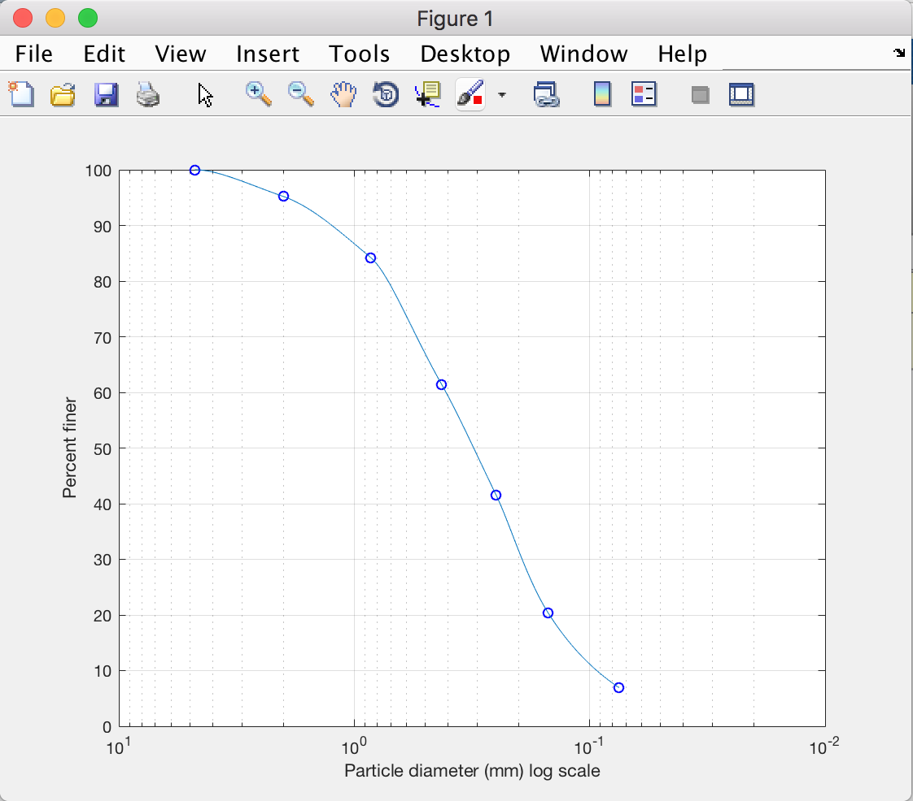
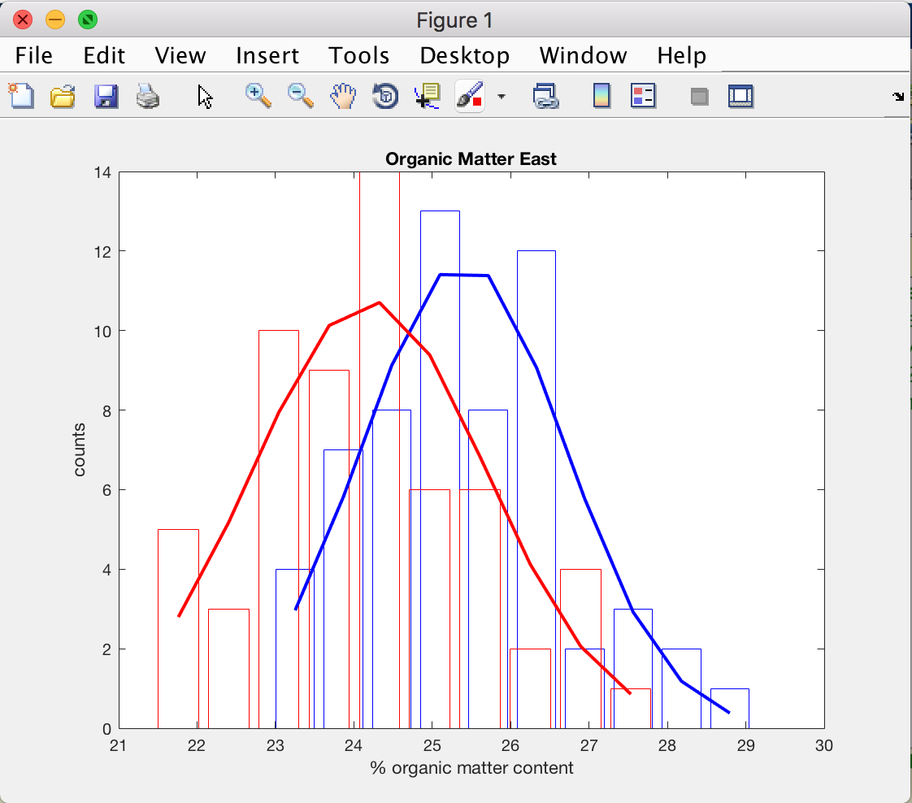
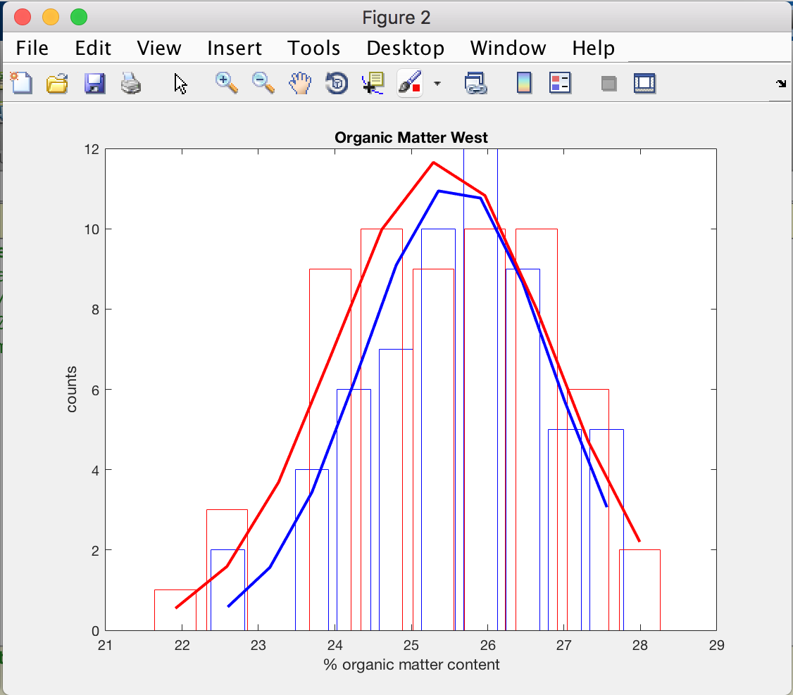
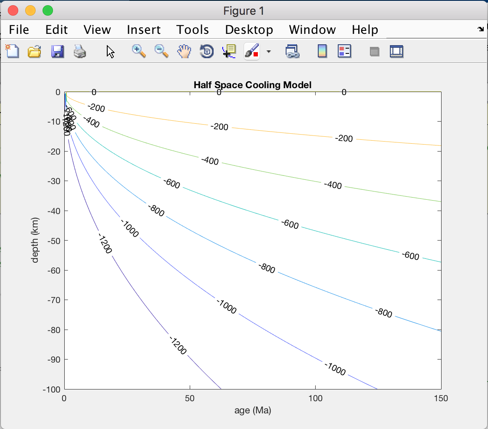
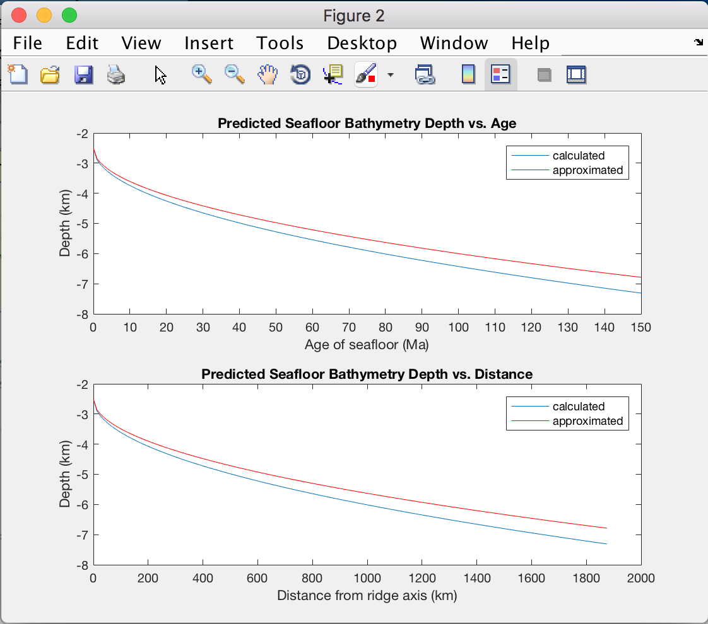
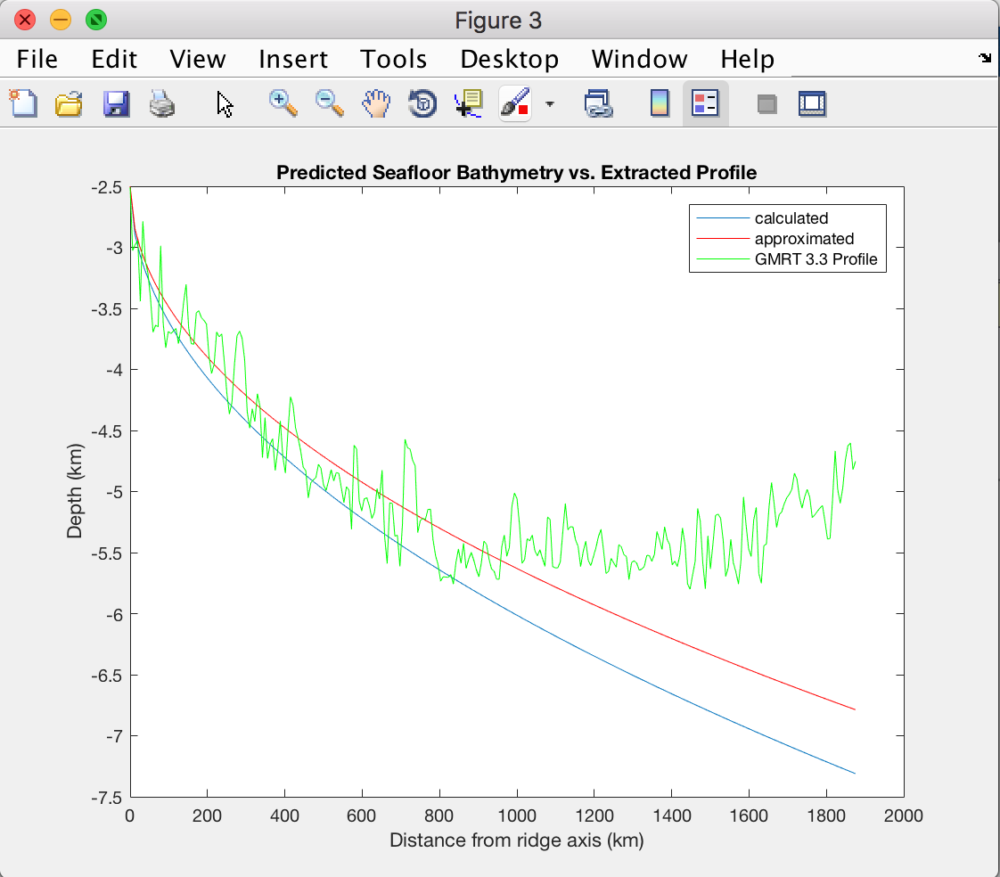
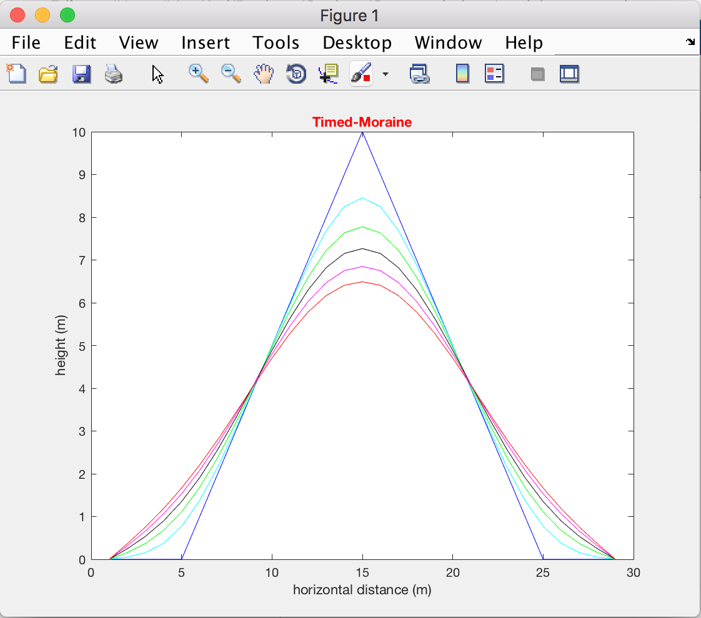
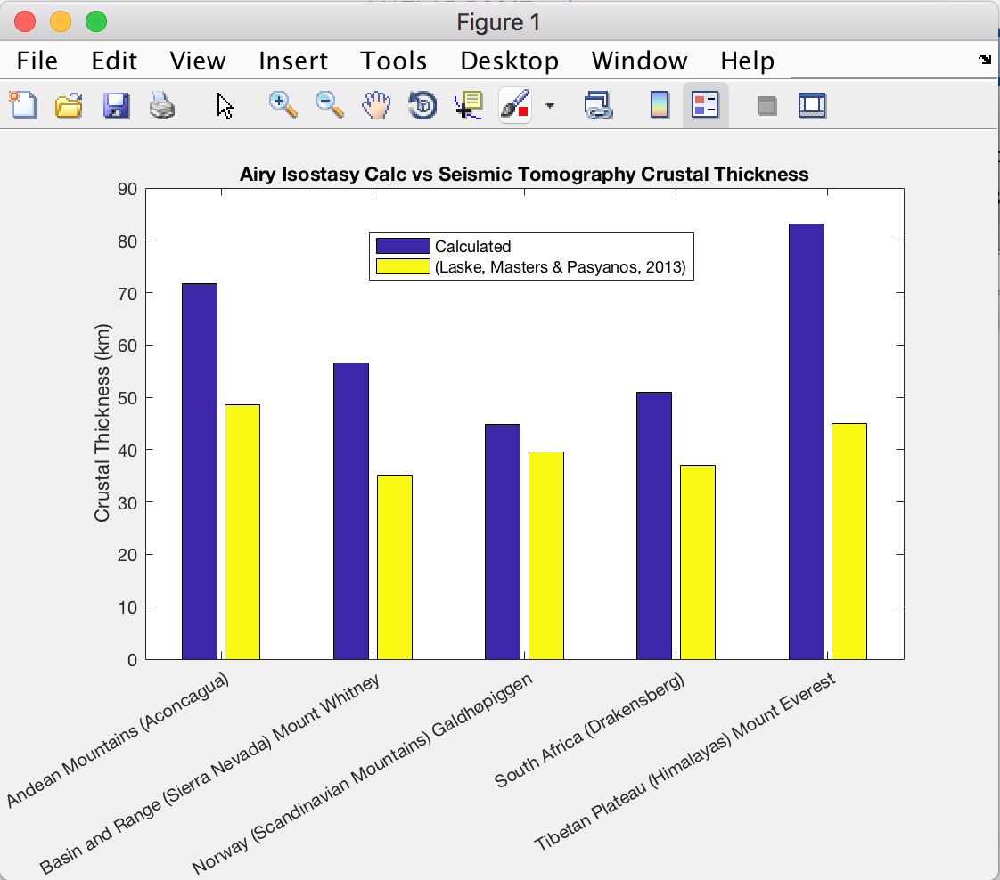

Principles of Geotechnical Engineering 6th Ed. by Braja M. Das
I'm currently reading through this textbook in order to expand my knowlege of geotechnical analysis. I intend to solve the example and exercise problems using MATLAB to reproduce the figures and perform the calculations.
Chapter 2: Origin of Soil and Grain Size
Example 2.1
a. Plot a grain-size distribution curve.
The grain-size distribution curve with shape-preserving interpolant curve generated using MATLAB.
b. Determine the D10, D30 and D60 from the grain-size distribution curve.
From the above figure, 10% of particles have diameter passing through the sieve or D10 = 0.0932 mm
From the above figure, 30% of particles have diameter passing through the sieve or D30 = 0.1936 mm
From the above figure, 60% of particles have diameter passing through the sieve or D60 = 0.4075 mm
The D'--' values indicate that this is a medium sand, with smaller amounts of fine sand and very fine sand (Krumbein, 1937; USGS Open-File Report 2006-1195)
c. Calculate the uniformity coefficient, Cu.
The coefficient of uniformity (Cu) is calculated from Cu = D60/D10 (Eq. 2.9, (Das, 2006));
Cu = 4.3707
d. Calculate the coefficient of gradation, Cc.
The coefficient of gradation (Cc) is calculated from Cc = D30^2/D60xD10 (Eq. 2.9, (Das, 2006));
Cc = 0.9862
For a sand to be classified as well graded, the following criteria must be met:
Cu ≥ 6 & 1 < Cc < 3
If both of these criteria are not met, the sand is classified as poorly graded or SP. If both of these criteria are met, the sand is classified as well graded or SW (Holtz and Kovacs, 1981). Therefore, this sand is poorly graded (SP).
Science Education Resource Center (SERC) at Carleton College and the National Association of Geoscience Teachers (NAGT)
I've currently been reviewing MATLAB exercises posted on serc.carleton.edu to practice working with real-world data and geoscience problems and to display some of my capabilities using MATLAB to visualize and analyze that data.
Using Univariate Statistics to Understand Regional Drainage Patterns link
The purpose of this activity was to plot histograms of, then fit gaussian distribution curves to, measurements of organic matter content in sediment samples from freshwater deltas. T-test were then conducted to quantitatively distinguish whether the samples were from different sedimentary source regions.
The sediment data samples from the east side of the lake plotted as histograms in red and blue. The corresponding normal Gaussian distributions are plotted as lines over the histogram. The results of the t-test indicate that the sediments from the east side of the lake are from unique sources. h_E = 1, which indicates a rejection of the null hypothesis at the 5% significance level, which means that the two data sets from the east side of the lake are statistically unique. This indicates that they were sourced from different fluvial channels.
The sediment data samples from the west side of the lake plotted as histograms in red and blue. The corresponding normal Gaussian distributions are plotted as lines over the histogram. The results of the t-test indicate that the sediments from the west side of the lake are from unique sources. h_W = 0, which indicates a failure to reject the null hypothesis at the 5% significance level, which means that the two data sets from the west side of the lake are not statistically unique. This indicates that they were sourced from the same fluvial channel.
The purpose of this activity was to use the half-space cooling model of the oceanic lithosphere Turcotte and Schubert (2002) and plot the thermal boundary layers and then use that model to estimate the seafloor bathymetry. I used both the more detailed equation that used defined values for the coefficient of thermal expansion, density and temperature; I also included a simplified model that just uses a set constant for comparison (see the second figure, and note the difference between the red and blue lines) The more detailed method predicts a deeper seafloor bathymetry, while the simplified model is shallower. The estimated seafloor bathymetry was then compared to data extracted from the GMRT Grid v3.3 using the GeoMapApp v3.6.4 to evaluate the effectiveness of the model. The model appears to be accurate until >~70 Ma or ~900 km from the mid-Atlantic ridge. The reason is because there is not much thermal difference in the oceanic crust >~70 Ma; this flattening could possibly be caused by adding heat to the base of the lithosphere.
 The half-space cooling model showing isotherms at 200°C from 0-100km depth and 0-150Ma plate age.
 The first subplot shows the seafloor bathymetry vs plate age predicted by the models based on the half-space cooling model (calculated, blue) and the simplified approximation (approximated, red). The second subplot shows the seafloor bathymetry vs distance from the mid-ocean ridge predicted by the models based on the half-space cooling model (calculated, blue) and the simplified approximation (approximated, red) and assuming a half-spreading rate of 1.25 cm/yr.
 This plot shows the seafloor bathymetry vs distance from the mid-ocean ridge predicted by the models based on the half-space cooling model (calculated, blue) and the simplified approximation (approximated, red) vs the the bathymetry data extracted from the GMRT Grid v3.3 from the mid-Atlantic ridge to the Eastern North American Margin (GMRT 3.3 profile,green).
The purpose of this activity was to plot the change in shape of a hillslope over time using a simple diffusion equation to describe the sediment transport.
 This plot shows the the change in the shape of a hillslope with lines plotted at 0, 1000, 2000, 3000, 4000 and 5000 years.
The purpose of this activity was to use the calculation for Airy Isostasy to estimate the crustal thickness beneath 5 mountains around the world, and then compare the estimated crustal thicknesses to a published crustal thickness grid (Laske, Masters & Pasyanos, 2013) to evaluate the effectiveness of the model. As observed in the figure below, the Airy Isostasy model over-estimates the crustal thickness for the selected mountains. This is due to several factors. First, the crustal thickness grid has a resolution of 1x1 degree, and therefore the crustal thicknesses used for comparison are 0.2225-0.6474 degrees away from the location of the mountain peaks used for the Airy Isostasy model calculation. Also, the Airy Isostasy model makes a lot of assumptions about the composition and structure of the crust. I think the largest factor influencing the difference is the addition of an "average crustal thickness" of 30 km to all of the crustal thicknesses calculated.
 This plot shows the crustal thicknesses beneath 5 mountains calculated assuming Airy Isostasy (blue) vs the crustal thickness grid of (Laske, Masters & Pasyanos, 2013) (yellow).
Review for the National (ASBOG) Geology Licensing Exam
I'm currently working on studying for the fundamentals portion of the professional geology licensing exam. I will use this space as a repository for useful terms, equations, and concepts.
Michigan State University
I'll use this space as a repository for the projects I participated in during my master's degree program at MSU.
Dissertation Topic: The Origin and Implications of a High Amplitude Magnetic Anomaly on the Eastern North American Margin
Abstract
Understanding the origin of the Hudson Fan Magnetic Anomaly Highs (HFMAH) on the Eastern
North American Margin (ENAM) has implications for the rifting processes that formed the
Atlantic seafloor. The origin and implications of HFMAH were explored in this research using
magnetic forward modeling based on newly acquired high-resolution sea surface magnetic
anomaly data with multi-channel seismic (MCS) for a source geometry constraint. The modeling
results show that the two peaks of the HFMAH are reproducible by two highly magnetized
bodies in the crust, the locations of which coincide with two zones of rough basement
topography observed in MCS. It is proposed that the HFMAH is due to the crust emplaced by a
propagating rift that accommodated rapid changes in directions and spreading rates during the
very early stage of the Atlantic opening that formed the ENAM.
University of Michigan
I'll use this space as a repository for the projects I participated in during my bachelor's degree program at UofM.
Senior Project Topic: Experiments on the Melting Curve of CaCO3 at 6GPa
Abstract
The melting curve of calcite (CaCO3) is poorly constrained at high pressures. Previous experiments conducted at the University of Michigan and elsewhere have collected data that suggest different melting curves for CaCO3 at high pressure. In order to better constrain the melting curve of CaCO3 at 6GPa several sinking sphere experiments were conducted using the 6-8 multi-anvil apparatus at the University of Michigan. The results of these experiments were analyzed in the Mineral Physics laboratory using optical microscopy in addition to Raman spectroscopy. These experiments offer some support to the resistance method based data collected by Zeyu Li, while contradicting the results of the study by Suito et al (2001). However, more data is required to support these results and conclusively constrain where the melting point of CaCO3 is at 6GPa. In order to achieve this, several revisions need to be made to the methodology of these experiments to facilitate reproducibility.
{kind=link}
{kind=link}
{kind=link}
{kind=link}
{kind=link}